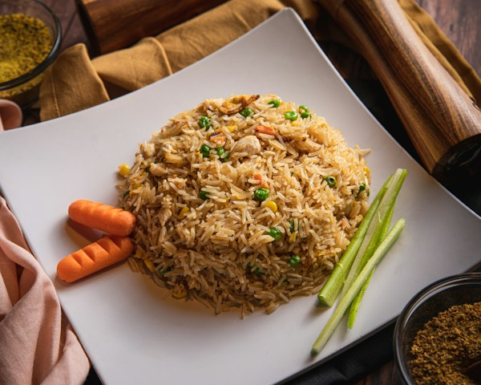

Description
Quick, easy, and delicious — the perfect way to use up leftover rice! Simple ingredients, amazing flavor.
Ingredients
- Cooked rice — 3 cups (cold rice works best!)
- Eggs — 2 large
- Garlic — 3 cloves, minced
- Onion — ½ medium, chopped
- Green onions — 2 stalks, chopped
- Soy sauce — 1–2 tablespoons
- Cooking oil — 2 tablespoons
- Salt and pepper — to taste
Step-by-Step Instructions
- Heat 1 tablespoon oil in a large pan or wok over medium-high heat.
- Beat the eggs, pour into the pan, and scramble until cooked. Remove and set aside.
- Add the remaining oil. Sauté garlic and onions until fragrant and soft.
- Add the rice — break up any clumps with your spatula.
- Drizzle with soy sauce and stir-fry for 3–5 minutes until heated through.
- Mix in the cooked eggs and green onions. Season with salt and pepper.
- Serve hot — great on its own or as a side dish! Enjoy!